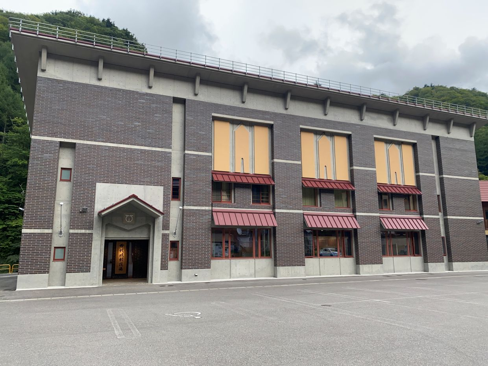
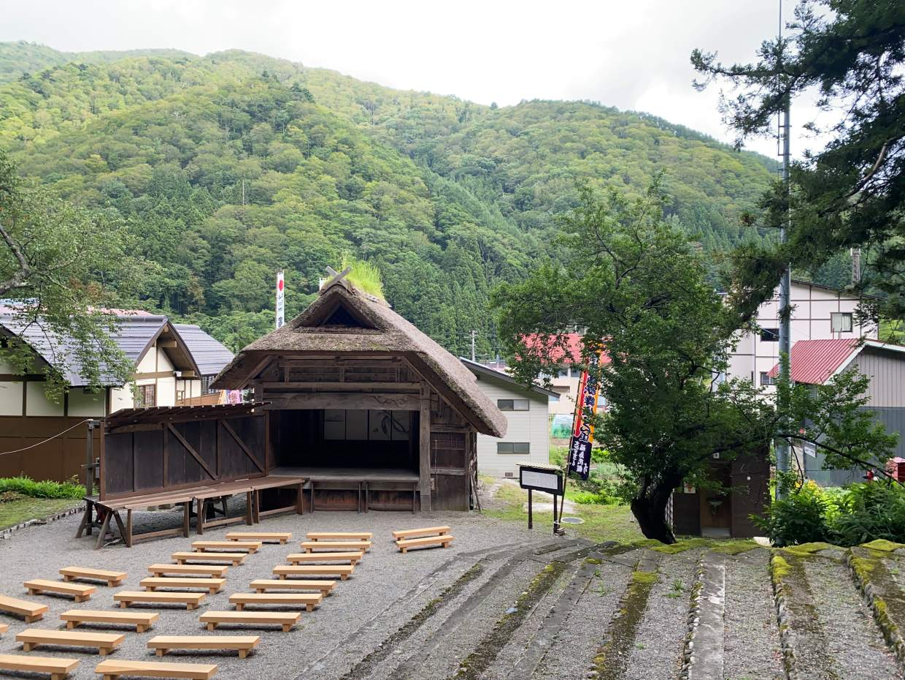

福島県 桧枝岐村
役場

神社の舞台

福島県の南西端にあり、最寄駅から車で1時間ほどかかるかなり山奥にあります。村は中心部にすべて固まっている感じで、観光にはよかったです。行ってみたい場所の一つだったので、今回訪問できてよかったです。


福島県の南西端にあり、最寄駅から車で1時間ほどかかるかなり山奥にあります。村は中心部にすべて固まっている感じで、観光にはよかったです。行ってみたい場所の一つだったので、今回訪問できてよかったです。